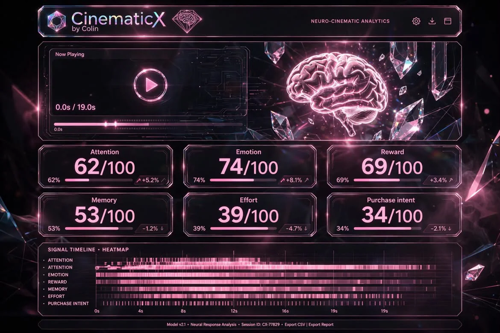
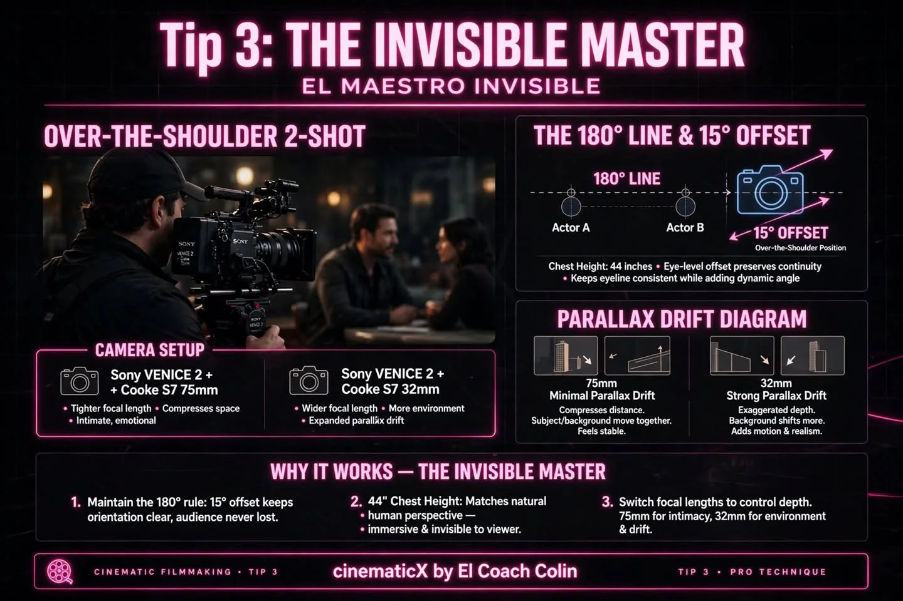
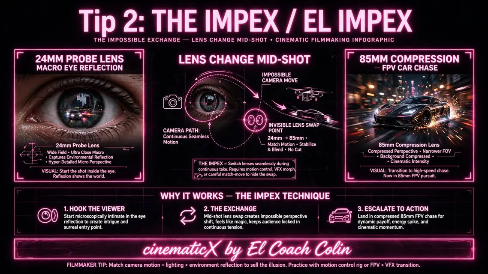

Drop a clip to read its signals
Analysed on this device. Nothing is uploaded.
Signals are estimates computed from the footage: pixels, faces, cuts and sound, each with a stated formula (tap explain). They are not brain scans, and they cannot predict views. Use them to compare cuts.

Camera Lab
Camera tricks that move emotions
Fifteen techniques performed live on a 3D set with real lens maths. The big frame is what the lens sees; the inset shows where the camera is, with the 180° line.
Masterclass


Every sampled frame ranked as a cover. Faces, contrast, colour and sharpness score it, and CLIP can rerank it.
Analyse a clip in Signals first.
Writes 8 hooks, on-screen text, a caption, hashtags and a re-edit plan for this clip, using its signals and transcript. Uses your own Anthropic API key, which is kept only in this browser.
What's rising in your niche this week: YouTube Shorts ranked by views per day, and the hook patterns their titles use.
Free from Google Cloud Console → APIs → YouTube Data API v3. Kept only in this browser.
TikTok publishes its own chart of rising sounds: TikTok Creative Center · Trending songs. In Instagram, look for the "Trending" arrow in the audio picker.
Three posts a day at the usual short-form peaks. Download the plan to your phone's calendar, with a 10-minute reminder for each post. To post hands-free, run tools/autopost.py, which uses the official APIs.
Every repo from the original brief, checked against GitHub. Each one either runs here or has been replaced by a tool that does its job.
Paste comments from a post, one per line. See how people felt and what to make next.